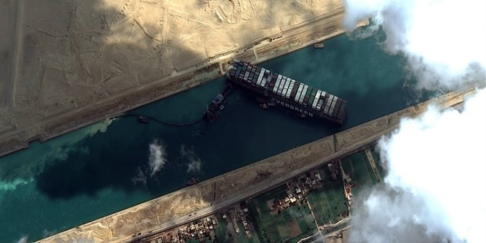
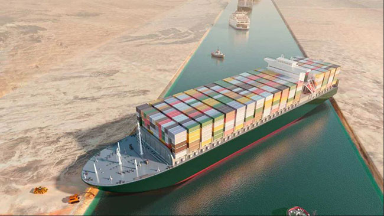
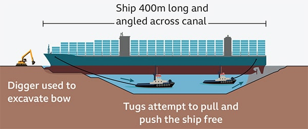
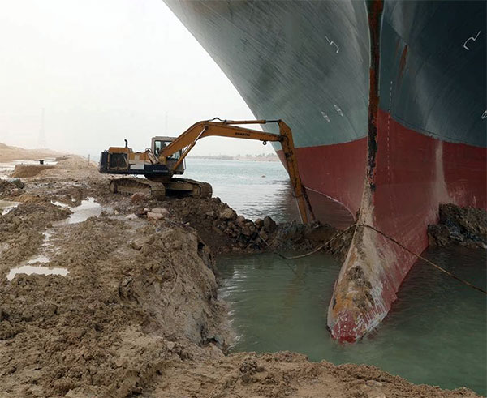
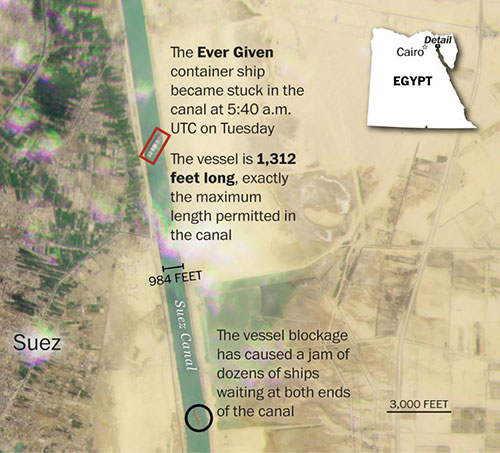
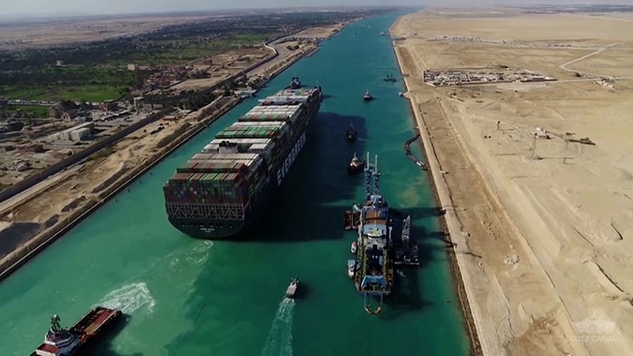

Before we react in hindsight for an incident that has been escalated to a point of no return, another Master ends up being blamed for "doing his job". Let’s put some thoughts together to understand how and why one should avoid “judging” the Master of Ever Given to the extent that the fault is pinned to his shoulders.
I’ve seen the vulnerability of a senior Master who wept profusely on my shoulder upon being informed by port control that “marine police had been informed”, following alleged pollution within the port. After being told by me, as attending P&I surveyor, it was going to be a monetary fine as I have dealt with several such matters at that port. I got a minute long warm hug from this Master in tears.
On another occasion demonstrating a Master’s professionalism under stress and worry — was when I handed my mobile phone to the Master to make a call to his family. This was after the Master had spent the night in a tugboat adjacent to the tanker which he was in command of, until the evening before when an explosion tore open four cargo tanks and five crew members and contractors had allegedly died as a result. The Master was informed by me that his ship was on national television reporting this incident in his home country. His family would surely be worried about his wellbeing since he had not contacted them after the incident. The Master thanked me for the phone and made his first call to his superintendent in Hong Kong and not his family. How ironical was this under a stressful situation?
What can one say when such acts of professionalism are demonstrated time and again by a fellow Master Mariner?

While the world is still combating the Novel Coronavirus, and the disruption caused by it in the maritime sector such as shortage of containers (just one of the many instances) — one of the world’s biggest container ships inadvertently and accidentally stayed aground for six days (from 23 March 2021) during her routine transit through the Suez Canal, blocking the through traffic causing delays of unimaginable proportions.
This blockage thus caused in the Suez Canal has reportedly costed the maritime industry billions of dollars. The Suez Canal authorities themselves are expecting USD one billion for loss of revenue and other expenses to get the Canal going.

There are and will be several questions raised by industry experts and lessons to be learned from the six gruelling days ‘Ever Given’ remained aground blocking through traffic passing the channel. Many have already commented, and some have been quite graphic.
“How did the ship get stuck? How was it refloated? Who is to be blamed for the crisis? And who is to be compensated for the loss?” These are some of the questions which maritime experts representing respective stakeholders are still debating upon.
Some will appoint shrewd lawyers and get their pound of flesh from those whom they find with deep pockets and in the line of fire. Good luck to them and their success be appreciated.

Will they blame the captain?
On the instant subject, Capt LK Panda who was the Chief Examiner and Nautical Adviser to the Government of India during a conversation with me, especially for of this article, mentioned: “Every seafarer including the Master is trained and certified in accordance with the provisions under the STCW Convention 1978 as amended. The Convention in its preamble states: “The Parties to this Convention, desiring to promote safety of life at sea and the protection of the marine environment by establishing in common agreement international standards of training, certification and watchkeeping for seafarers’’. Making it amply clear that the standards set in the Convention are related to sea, and not canals, nor inland waters, etc, and therefore rightly so, the coastal states, ports, canals etc have specialists, including pilots and harbour masters, to ensure safe transit of the vessel.”
There are several theories arising to Ever Given’s running aground while transiting the Suez Canal. Most are yet under investigation and we don’t want to go into an area of speculation, except for one aspect “blame on Master, or Navigating officers”.
During our conversation Capt Panda adds: “The assistance
of the pilots in restricted waters and canals are taken, for vessels’
safe transits, some on mandatory and some on optional basis. In
the instant case of transit through the Suez Canal, it is mandatory.
The Master-Pilot exchange ensures the pilots familiarity with the
equipment and vessels manoeuvring character for the safety of the
ensuing voyage”.
The port, canal, and inland water authorities, while making mandatory
pilotage while traversing through their water, conveniently follow
the zero-liability principle and blame the vessel/master for any
loss caused by the vessel while under pilotage, a travesty of justice.
It will be unfortunate if the ship’s crew is blemished for their
so-called incompetence, while on the other hand a general average
is declared. The principle and provisions of all statutes will have
to be applied uniformly and pragmatically and not to apportion the
fault on some while the others are exonerated.”
Putting some numbers into perspective, the closure of the canal has been estimated to cost USD 9 billion every day, USD 400 million every hour and USD 6.7 million dollar every minute (Courtesy BBC.com), seemingly on the higher side. However, let’s hold on to these numbers and put matters into perspective.
The ‘Ever Given’, while transiting northbound through the Suez Canal early hours on 23 March 2021, ran aground under two embarked pilots’ advice. This was a mandatory directive from Suez authorities. Initial inconclusive investigations suggest the vessel, navigating in the Suez Canal, was veered off by a gusty sandstorm, which caused the bow to veer off and run aground. The bank cushion effect and high windage area of her fully-laden condition played a vital role, reportedly so.
There have been no reports of human injury, pollution, nor cargo
damage, and initial investigations ruled out mechanical or engine
failure.
Hence, the usual question of ‘what was the Master & Pilot doing’,
has surfaced. This is the cause of concern and motive to pen this
article.
Here Captain LK Panda raised a valid question from his decades of experience in analysing findings of similar cases, on behalf of the Marine Mercantile Department of India (MMD).
“How can the Master be blamed for manoeuvring errors, when he has virtually no control, no dedicated training for such passages? One needs to ask rationally and not go by the archaic insurance rules or the so-called time-tested procedures. Even though there has been a paradigm shift in maritime trade, management process through the ISM principles, and the role of Master, the age-old principle of putting the blame on the Master continues! Why the port, canal and inland authorities not take adequate step to improve their pilots’ skills, and part of the responsibility?

Very aptly mentioned by someone who has seen both sides of such claims.
On 29 March 2021 the Ever Given was set afloat.
What next after setting her afloat?
What are the proximate, root, and contributing causes to this incident? The debate among industry experts continues depending on who wants to know the answers — the underwriters, lawyers, health and safety professionals, or those who incurred commercial or loss of reputation.
The unprecedented slowdown and bottlenecking of maritime trade have raised concerns and worry around the world about legitimate and quick recovery of their respective losses.
We request professionals involved in this case to spare a thought for the Master and crew of the vessel. The likely harrowing time they may have encountered, and going further, likely to encounter by way of the intricate investigation they will be subjected to. This, the author says, with first-hand experience of being on the other side of collecting facts during large enough maritime casualties of this scale.
To put forth simply the quantum of responsibility on the Master’s shoulders is unimaginable. Try to think of any other professional position where a single act (or lack of) by a single person has the potential to bring the world’s supply chain to a grinding halt. OMG — like our ‘Gen Y’ cadets would say, if they gave it a thought before this career option being chosen.
Make no mistake, even prematurely, the entire responsibility of any maritime incident now remains within the Master’s domain, irrespective of whether he/she is at fault, or otherwise. This is further compounded by possibilities of prosecution, persecution and likely arrests or at the least Master necessitating him to be away from his family and familiar surroundings for extended periods of time, in foreign and often alien places, and sometimes stretching to years, as we have seen in the recent past of similar “commercial” losses.
Historically, the international maritime community has approached maritime safety and investigation from a predominantly factual and technical perspective, with conventional wisdom applied to engineering and technological solutions to promote an outcome.
However, in recent years maritime casualty investigations have evolved in their approach to recognize and address the role of ‘human’ factors to a large degree, and to address their contributions to maritime casualties. Some question the fairness of this, as we do. But the legal minds amongst us have their own argument of due diligence and ultimate responsibility. Most cases are won considering the major factor being ‘human error’, leaving the door wide open for corrective measures.
This methodology encompasses aspects of competence, culture,
experience, fatigue, health, situational awareness, stress and working
conditions being assessed, and often provide objective and productive
outcomes from maritime incident investigations. This then ends up
in apportionment of blame.
Having said that counterproductive factor in this — which broadly
speaking categorizes human factors as acts of omissions, intentional
malefice or otherwise, negligence and errors in judgements, and
these categorizations greatly affects the Master’s morale, and results
in judgements passed on the Master’s and navigating officer’s competence,
and to a large extent, safety culture, due diligence amongst other
similar derived factors.
If you are a fellow Master Mariner or a seafarer, please take a
moment to empathize with the Master of Ever Given and avoid passing
unhinged and unsubstantiated judgements over self-appointed platforms
as normally occurs following incidents of these kind. I hope that
going forward, the Master and crew are investigated in a manner
enabling dignity and basic human rights and legal representation
including mental wellbeing accorded where necessary.
In conclusion, Capt Panda said, “I am of the opinion
that we need to examine the process, share our common responsibility,
and ponder, instead of making the ship staff responsible in totality
before not finding a single soul to blame on an autonomous ship.
Most of the marine casualties at sea, or in and around restricted
waters, have a ‘human error’ component in it. In the instant case,
where the vessel was under effective charge of pilot under mandatory
pilotage, the scope under ‘human error’ goes far beyond the ship’s
crew’’.

Analytical thought
Let’s switch sides and understand that even if a master has created an error of judgement (assumingly so) and has been the central point of this navigational error coupled with weather elements, are we in any position to point fingers at his incompetence, his professional integrity or to an extent criminalize him?
Is it fair to judge a Master’s command over a large ship to be able to take a quick corrective action while under advice of mandatory pilotage, and expert navigation assistance i.e., pilots of the Suez Canal to overrule and override their judgment of navigation through their domain in which they are used to, on a daily basis?
Can we expect a Captain to have the courage of conviction to
instantly react to a corrective action of the bow of his vessel
being caught in a gust of wind when incremental and immediate reaction
is expected to steer her to safety and avoid a disaster of this
scale?
Why should a fellow mariner be in a compromising position or even
having been looked at with raised eyebrows for commercial losses
which are largely insured against. Is it fair?
This is what we want this article to be pondered upon and thought
of, in sense of where we stand in harmony and complete solidarity
as merchant marine navigating officers in charge of watchkeeping
or command of vessels.
It will be a very looked down upon and criticized act on behalf
of those responsible for protecting the Master and the crew of the
Ever Given — if they fail in protecting them in every way from blame
and shame.
This article is written with a humble and genuine request towards those who have the capacity and are in a position to protect the Master’s personal and professional interest to be standing by him and to do what it takes to save the matter from being steered into a dangerous blame game. I feel it has the potential of being taken into this direction for no other motive other than finding a “scape goat” for this unfortunate accident.
In my independent view, it is an accident (happens to a big one) of international and multi-dimensional commercial losses (only). I would stand in solidarity with the Master and the crew of the Ever Given to let them know that they have done what they could to safely negotiate the narrow passage of the Suez Canal for the Ever Given. We have all the respect and the admiration for the courage and their professionalism in this difficult situation they have found themselves in.
“Jai Ho” to their wellbeing and hope their professional pride remains upheld.
Capt Zarir Irani, the author of this article, is a prominent ‘claims and casualty investigator’ who has an admiration and respect of the maritime community. He has successfully concluded more than 22,300 nominations, many of them internationally acclaimed. He is invited by international media to comment independently on the first response of ‘global maritime disasters’, some of which can be viewed on his YouTube channel.
Capt Iraniis Chairman of the Board of Directors, Constellation Marine Services, London, UAE, Singapore and India. He's also the past president of the International Institute of Marine Surveying (IIMS) and current member of IIMS Board of Directors. capt.irani@constellationms.com